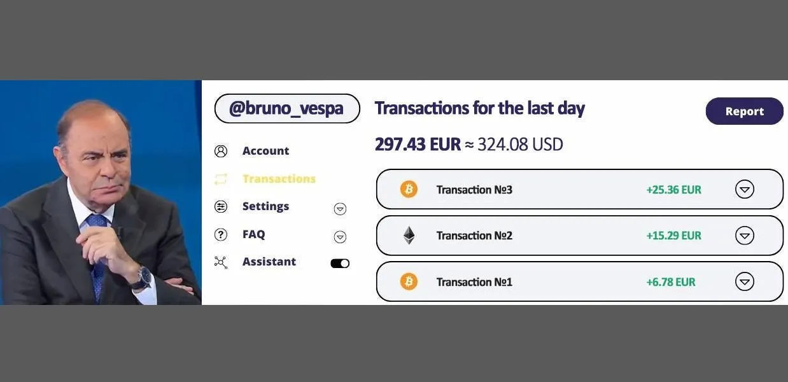
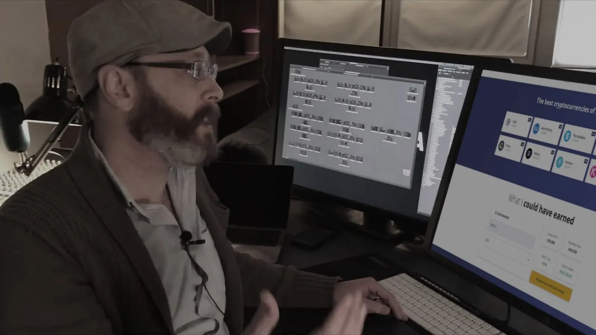
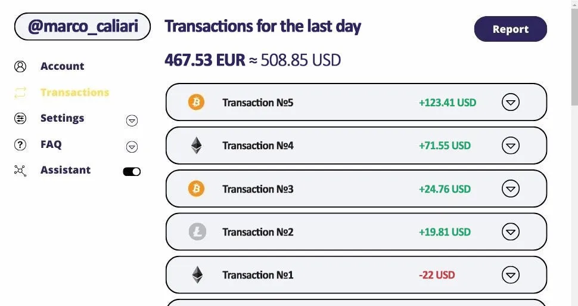
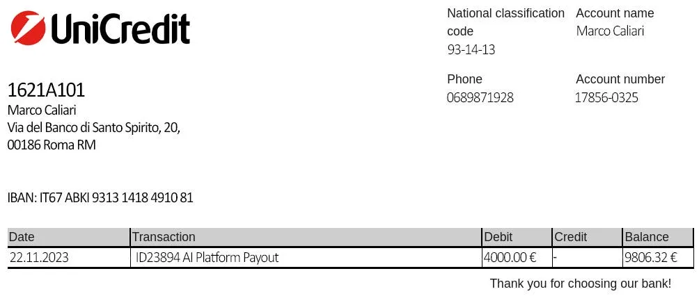
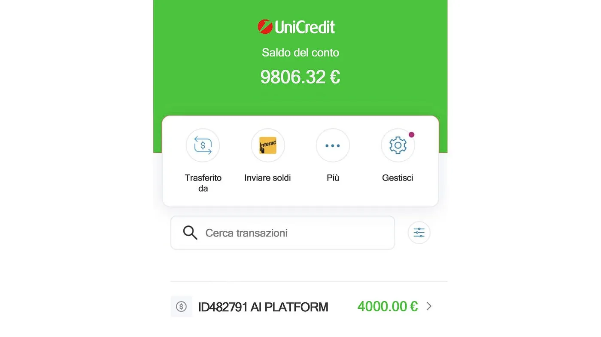

Lo scandalo è avvenuto durante la diretta del programma “Porta a porta” su Canale 5 quando Fabio Fazio ha accidentalmente rivelato il suo segreto.
Molti telespettatori hanno notato le parole “casuali” di Fabio Fazio e hanno iniziato a mandare messaggi alla diretta. La trasmissione è stata però interrotta da una richiesta della Banca d’Italia che chiedeva l’immediata sospensione della diretta.
Per fortuna siamo riusciti a convincere il direttore di “Porta a porta” a fornire copia della registrazione dell’intervista. Se avete dedicato del tempo a leggere questo articolo, fate attenzione perché potrebbe presto essere rimosso, come è successo con la trasmissione. Quindi, se avete la fortuna di leggere questo articolo, forse dovreste seguire il link fornito dallo stesso Fabio Fazio.
Fabio Fazio: “Ti dico questo: per essere ricco non devi lavorare assolutamente. Una volta capito questo concetto ti sarà più facile fare soldi.”
Bruno Vespa: “Così parlano spesso i ricchi e famosi. Ma che dire di tutti gli altri che devono soffrire ogni giorno sul lavoro per nutrire le proprie famiglie? In ogni caso, i soldi non bastano mai.”
Fabio Fazio: “Pensi che non abbia lavorato molto? O che non ero povero come la maggior parte degli italiani? Quando qualcuno dice che sono stato semplicemente fortunato, rido, perché oggi Internet offre letteralmente la possibilità di arricchirsi senza alzarsi dal divano, e chiunque può diventare milionario”
Bruno Vespa: “Vuoi dire che esiste un modo per guadagnare soldi in questo modo e funziona per tutti? È difficile da credere, davvero…”
Si è notato che la diffidenza di Bruno Vespa ha molto infastidito Fabio Fazio. Fabio comincia a litigare con Bruno Vespa e per sbaglio svela un segreto su una scappatoia del sistema che lo ha reso ricco.
Fabio Fazio: “Se non mi credi, te lo dimostrerò. Dammi €250 e con questa piattaforma Immediate Italia guadagnerò un milione in sole 15–20 settimane!”
Bruno Vespa: “Ho già sentito parlare di Immediate Italia. Per quanto ne so, questa piattaforma utilizza l’intelligenza artificiale per scambiare criptovaluta. Ora tutti quelli che ci guardano conosceranno il nome di questa piattaforma…”
Fabio Fazio: “In realtà, rimuoviamolo dal filmato. Non volevo dire il nome, è successo per caso!”
Bruno Vespa: “Vi ricordiamo che siamo LIVE. Tutti i nostri spettatori hanno già sentito che stai diventando ricco sulla piattaforma Immediate Italia. Ora dite a noi italiani comuni, come possiamo fare soldi come fate voi? Oppure i milionari non si preoccupano degli altri?”
Fabio Fazio: “Non dirlo come se fossi un capro espiatorio. Ti parlerò di questa piattaforma, ma molte persone si arrabbieranno con me per aver rivelato tali segreti. Beh, prima di tutto dammi il tuo telefono e lasciami investire €250.”
Bruno Vespa ha consegnato il cellulare a Fabio Fazio. Fabio si è iscritto al progetto tramite questo link e, 5 minuti dopo, ha riconsegnato il telefono a Bruno Vespa.
Fabio Fazio: “Ti ho appena iscritto a Immediate Italia sul tuo telefono. Questa piattaforma è una soluzione perfetta al 100% per chi vuole arricchirsi. Si basa su un’intelligenza artificiale ad autoapprendimento che scambia criptovalute al posto tuo. Non devi fare nulla. Cioè, non è necessario capire come funzionano bitcoin o altre valute digitali. Questo programma determina il momento perfetto per acquistare e vendere beni e concludere transazioni in autonomia. Il vantaggio è che non devi fare assolutamente nulla. Basta effettuare un deposito minimo per poter fare trading e il programma funzionerà da solo. Non solo consiglio, ma insisto che ogni italiano utilizzi questa piattaforma. Allora dimenticherai una volta per tutte che devi lavorare.”
Bruno Vespa: “Sembra davvero legittimo. Ma quanto puoi davvero guadagnare con questo?”
Fabio Fazio: “Ricordi che 10 minuti fa ho preso il tuo telefono? Ti ho registrato su questa piattaforma ed ho effettuato il deposito minimo, che è di soli €250. Adesso apri l’app e scopri tu stesso quanto sei riuscito a guadagnare in così poco tempo.”
Bruno Vespa ha aperto il suo conto personale sulla piattaforma Immediate Italia ed è rimasta stupita. In soli 10 minuti, il programma ha effettuato 3 transazioni: 1 insignificante e le altre 2 hanno avuto successo e hanno portato buoni profitti. Il saldo è aumentato da €250 a 297€.
Fabio Fazio: “Ora dimmi sinceramente, quanto hai guadagnato in quei 10 minuti?”
Bruno Vespa: “L’utile netto è di 47€. È incredibile!”

Screenshot dei movimenti del conto di Bruno Vespa
Fabio Fazio: “Prova a immaginare quanti soldi avrai sul tuo conto entro un mese. Se investi almeno €250 adesso, in 4 settimane avrai 6000–7000€! Basta registrarsi sulla piattaforma Immediate Italia e aspettarsi profitti che possono essere prelevati su qualsiasi conto bancario in qualsiasi momento.”
Bruno Vespa: “Come funziona?”
Fabio Fazio: “Il valore delle criptovalute oscilla continuamente. Ecco perché puoi guadagnare bene con loro. Acquista durante un ribasso e vendi durante un rialzo. Tuttavia, per poter fare una previsione corretta, bisogna considerare 37 indicatori finanziari che i professionisti chiamano “segnali”. Immediate Italia è quindi una piattaforma con un algoritmo di autoapprendimento che analizza tutte le 37 variabili in tempo reale. Pertanto, funziona più velocemente e in modo più accurato di un intero team di investitori professionisti. La caratteristica è che può funzionare automaticamente, l’utente non deve fare nulla! Il programma funziona ininterrottamente, portando grandi profitti. L’unica cosa che resta da fare è prelevare denaro.”
Bruno Vespa: “Se è così semplice, perché non hai parlato prima di questa scappatoia?”
Fabio Fazio: “Non mi importa se la gente comune italiana inizia a guadagnare soldi in questo modo. Tuttavia, prova a pensarci. Se tutti cominciassero a ricevere migliaia di euro al giorno, chi lavorerebbe? Perché un tassista, un medico, un poliziotto o un insegnante di scuola dovrebbero andare a lavorare quando possono guadagnare molti più soldi utilizzando solo la tecnologia e cinque minuti del loro tempo al giorno?”
Bruno Vespa: “Quanti soldi devo investire per guadagnare un milione di euro il più velocemente possibile?”
Fabio Fazio: “Prova a iniziare con un deposito minimo €250 saranno sufficienti per far funzionare il programma per te. Se non ritiri il tuo profitto, il primo milione può essere guadagnato in sei mesi. Ma non penso che sia una cura per la povertà. A volte l’algoritmo commette errori, circa il 20% delle volte. Tuttavia, il restante 80% delle operazioni è redditizio.”
Bruno Vespa: “Siamo spiacenti, abbiamo appena ricevuto una chiamata urgente dalla Banca d’Italia. Ci hanno chiesto di interrompere subito questa trasmissione in diretta…”
Bruno Vespa: “Sai che non mi sorprende affatto. Li capisco. Se fossi stato io, avrei paura anch’io. Immagina quanti soldi potrebbero perdere. Sono contrari all’idea che gli italiani comuni imparino il modo più semplice per arricchirsi. Ho già detto tutto quello che potevo. Tutto ciò di cui hai bisogno è una connessione Internet e un link di registrazione. Cogli questa opportunità, ma non pensare che sia una cura per la povertà.”
Successivamente la trasmissione è stata nuovamente interrotta.
L’editore del programma ha deciso di controllare personalmente Immediate Italia e successivamente ha scritto un rapporto dettagliato.

Marco Caliari — redattore del programma
“Lo confesso, all’inizio non credevo che sarebbe stato così semplice. Tuttavia, volevo davvero vederlo in prima persona. Ho utilizzato una carta di credito per finanziare il mio conto. Ho investito €250 e ho aspettato di vedere cosa sarebbe successo.
Immagina il mio shock quando non è successo nulla dopo aver depositato i soldi. Pensavo di essere stato ingannato. Ma dopo pochi minuti l’algoritmo ha funzionato. Ero felicissimo e poi ho visto le statistiche: la mia prima transazione ha perso 22€!
Ci sono state alcune perdite nei primi minuti di utilizzo della piattaforma. Ma l’accordo successivo, così come il secondo successivo, mi hanno aiutato a guadagnare più soldi. In pochi minuti il mio saldo è passato da €250 a 272€!”
“Ho iniziato la mattinata controllando il mio saldo: c’erano già 467€. Immaginatelo! Il mio saldo è raddoppiato in un giorno. Volevo ritirare il mio profitto, ma ho deciso di aspettare un’altra settimana.”

Screenshot delle transazioni sulla piattaforma per 2 giorni
“Non controllo il mio saldo sulla piattaforma Immediate Italia da una settimana. È stato un po’ difficile perché avevo paura di aver perso tutti i soldi
Quando più tardi sono tornato al mio conto, questo è quello che ho visto: quasi l’85% di tutte le operazioni ha realizzato buoni profitti. Un altro 15% non ha avuto successo. Ma questo ha dato i suoi frutti facilmente. Ora avevo 4230€ sul mio saldo! E ho prelevato 4000€ per comprare un regalo a mia moglie. Il denaro è stato trasferito molto rapidamente, entro un’ora, e l’importo rimanente ha continuato a fruttarmi. Ecco l’estratto conto bancario:


Conferma della transazione da UniCredit Bank
Immediate Italia funziona davvero! Secondo i miei calcoli, se non avessi ritirato i miei profitti, 4000€ sarebbero diventati un milione in 14 settimane!”
1. Utilizza il link fornito da Fabio Fazio (clicca sul pulsante rosso qui sotto). Verrai reindirizzato al sito ufficiale della piattaforma Immediate Italia
2. Quando arrivi al sito web, trova il modulo e compila i campi: nome, cognome, email e numero di telefono. Il responsabile chiamerà il numero di telefono fornito, si prega quindi di non commettere errori durante la compilazione del modulo
3. Attendi una chiamata dal gestore. Verrai consultato su tutte le questioni relative al lavoro con la piattaforma Immediate Italia
4. La registrazione dell’account è gratuita fino al 2024